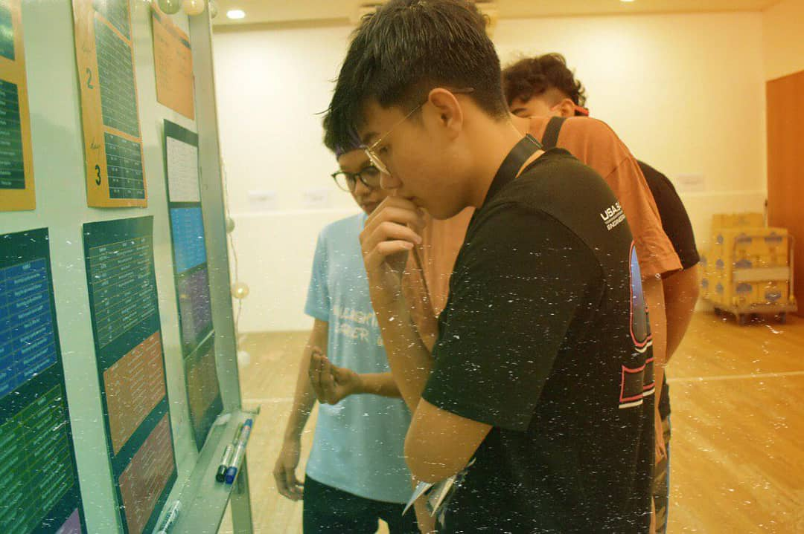
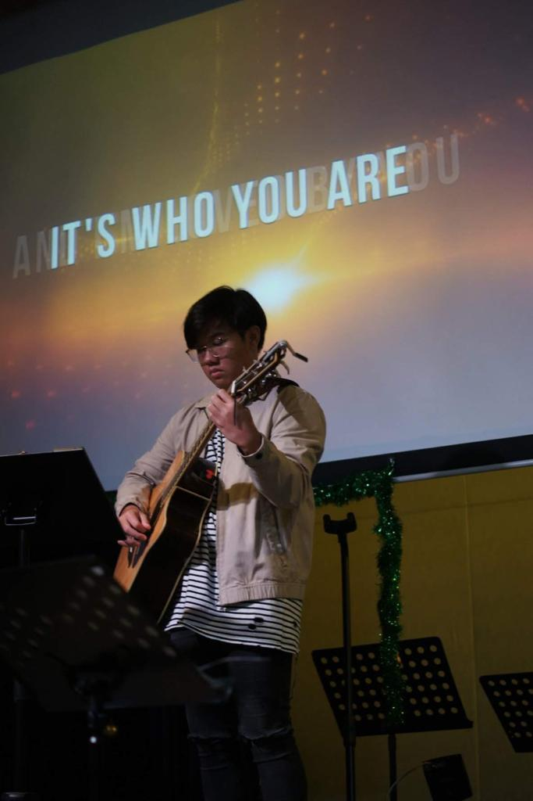
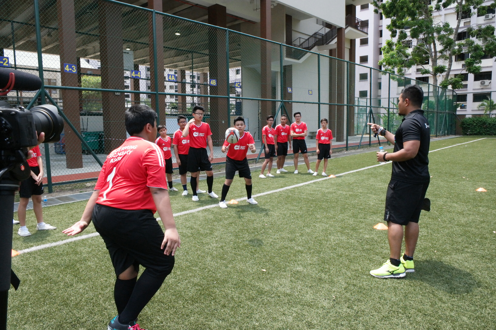

Why I want
to be in this course?
I have always been fascinated by how media can influence society, and curious about what goes on behind the scenes. I believe that communication is a strong suit of mine, and this trait was further honed when I worked at Challenger as a retail assistant and when I also volunteered as an usher in my Church. I also emceed for church events which further developed my public speaking skills. I also attended a creative writing course in my church to develop greater confidence in my language skills. I am keen to learn more through this course and will work hard to fulfil my dream of leaving my mark on the media in Singapore.


I was born in the Philippines back on June 12, 2002. In 2006, I moved to Singapore with my family for a better life and education. I have many hobbies such as playing the guitar which I utilize in my church as I am a member of the band. Playing basketball and Rugby are also my favourite. I have been representing my school for competitions since 2016.

In 2016, 14 students of East Spring Secondary was fortunate enough to be given the opportunity to learn the basics of rugby. I was one of those 14 students. The opportunity was courtesy of SportsCare Foundation and the Singapore Rugby Union. Amongst the 14 of us, I was chosen to do a short interview with Straits Times. Their professionalism and how they conducted the interview was truly amazing. I was captivated by how they worked behind the scenes, and how skilful the interviewer was in terms of speaking. This ignited my interest in the industry which made me want to involve myself in it too.
In the photo, I am actually the one recieving the ball.